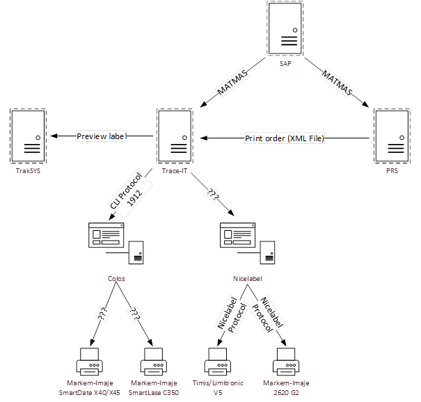
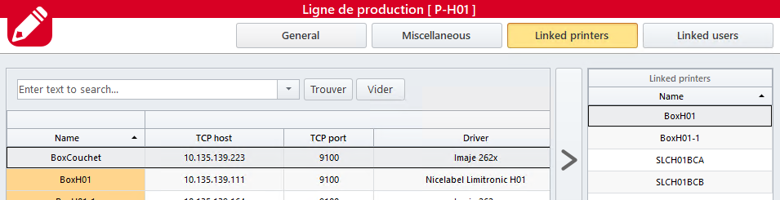
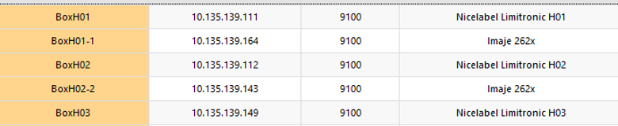
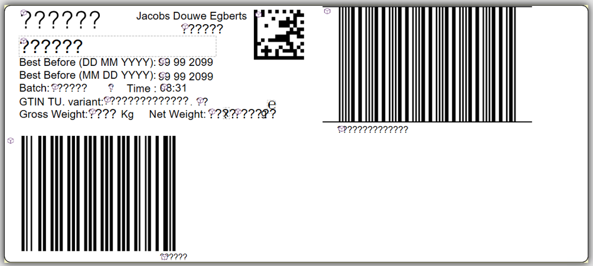
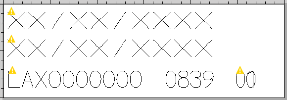

Projet impression
PRS : Cette application représente notre MES qui est un logiciel de pilotage de la production. Beaucoup d'action du process passe par ce dernier et les autres applications autour récupèrent des informations via PRS. Application groupe géré par CGI
Trace IT : Voici le moteur du système d'impression, le logiciel contenant tout les pilotes pour pouvoir imprimer à partir de différentes modèles d'imprimante. Dans notre cas nous utilisons les pilotes colos et nicelabel. C'est un gestionnaire d'impression, où toutes les impressions de lignes y sont regroupés, tous les layout, l'historique d'impression, les différentes sources de données... C'est un logiciel créé et maintenu par Novexx.
Colos : Logiciel pouvant faire tout le travail de Trace IT mais nous l'utilisons uniquement pour les marjem imaje, c'est-à-dire les imprimantes laser. (Configurations, maintenances...)Nicelabel : Logiciel permettant de gérer les imprimantes Limitronics jet d'encre
Schéma process impression

Comme évoqué précédemment Trace IT est notre logiciel de gestionnaire d'impression. J'ai dû plusieurs fois intervenir sur ce logiciel dans le but de débloquer certains problèmes, où alors d'implémenter de nouvelles imprimantes, de nouveaux masques d'impression. Il faut savoir que tout démarre avec la création d'un OF via SAP, envoyé via un MATMAS à PRS et trace-it. Entre-eux ils s'échangent un message sous forme de fichier XML. Grâce à tous ces messages le process peut continuer et Trace IT peut transférer les bon messages aux bonnes imprimantes sur les bonnes lignes.
 Sur les lignes de productions il y a deux sortes d'imprimantes pour deux supports différents. Les laser pour les petites boites contenant les capsules de cafés et les grosses boites contenant les petites boites. (CU et fardes) Pour ces deux types d'imprimantes il existe des masques particuliers à appliquer en fonction du client et du nombre de capsules contenue dans la boite. En grande partie ses masques sont intégrés de manières automatique à travers trace it et envoyés aux imprimantes.
Masque Timis 
Masque Markem
Nous avons donc deux styles d'impression de ligne qui se complètent parfaitement. Dans les machines schubert nous avons les markem laser, et en sortie de schubert nous avons les timis limitronics. Celle-ci sont reliées via des câbles rj45 sur des prises directement reliées au bon switch. Elles ont un vlan particulier (275 packaging). Elles reçoivent donc les informations (ordre de fabrication, articles, dates...) en automatique via les applications citées ci-dessus.
J'ai eu différents projets à réaliser sur l'impression, premièrement j'ai du refaire un visio du système d'impression pour pouvoir le comprendre et l'appréhender. J'ai ensuite du aider les utilisateurs lors de pannes inhabituelles comme une carte electronique qui avait grillé à l'interieur compromettant une base de données. J'a ensuite pu passer au problème d'équilibrage entre vitesse de tapis des schubert et réglage du dwell time (temps que reste le laser sur la boite) pour calibrer l'impression. L'impression m'a permis de découvrir les modes de fonctionnement d'une usine car sans cela une usine ne peut plus produire c'est une système très important donc très protégé.